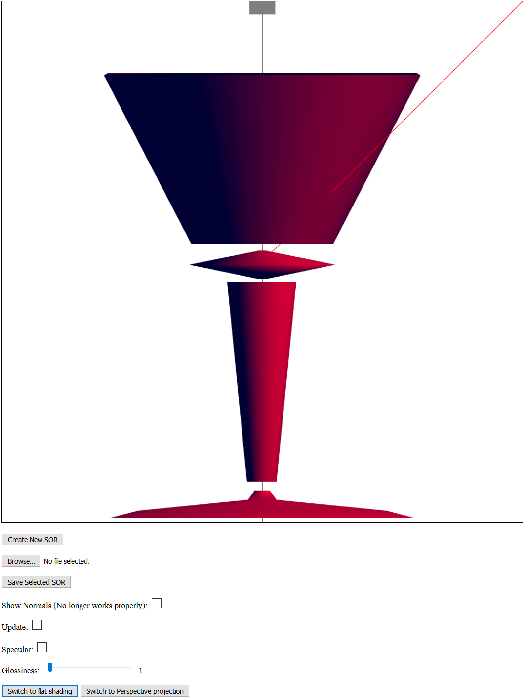

Name: Mackenzie Glynn
Login ID: mglynn
ASN#: Program 3
Date: 11/06/2016
Implemented:
- Calculates center of objects
- Ability to select objects
- Ability to scale objects
- Ability to translate objects
- Ability to rotate objects
- Ability to save selected SOR
- Bonus: Created multiple SORs to create a larger scene. I made a drinking glass (See screenshot) which is
made up of separate pieces to show off functionality
- Assignment
Screenshot:
